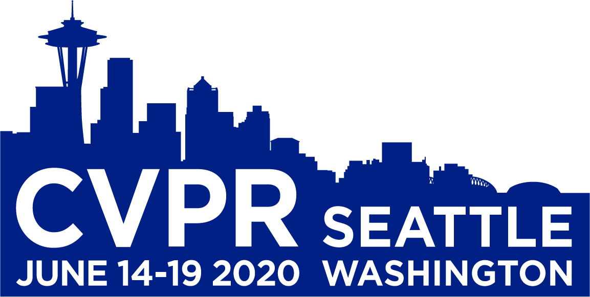

Gedeon Muhawenayo
Gedeon Muhawenayo
gmuhawenayo@aimsammi.org
CV / Resume
I am a machine learning research engineer. I have a masters degree in Machine Intelligence from the African Masters in Machine Intelligence (AMMI), where I worked with Georgia Gkioxari. I am interested in Computer Vision (satellite and aerial images processing), Graph Convolution Network and Model Optimization (Pruning, Quantization and Binarization). I have a Bachelors degree in Electronics and Telecommunication Engineering from the University of Rwanda.
Msc. Machine Learning.
Oct 2019 - Nov 2020
Bsc. Electronics and Telecommunication Engineering.
Sept 2015 - June 2019

|
Compressed Object Detection |
|
Cassava Disease Classification. |

|
Object Tracking. |
|
Common Image Operations with OpenCV. |
|
Binary Graph convolutional Neural Networks. |
|
Signal and Functions Analyzer UI. |

|
Object Detection, Segmentation and Human pose estimation. |
|
Smart Electrical Energy Meter |
|
Attendance system |
|
Embedded system and IoT |
|  |
Conference on Computer Vision and Pattern Recognition (CVPR) |

|
Machine Learning Instructor at 10Academy Data Science Training |